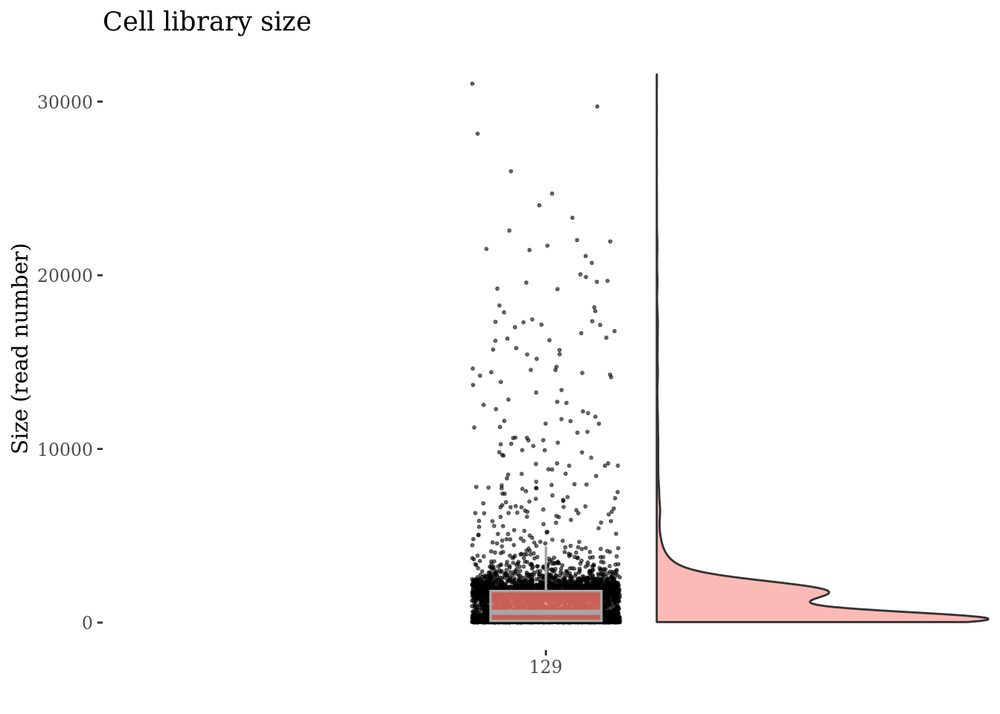
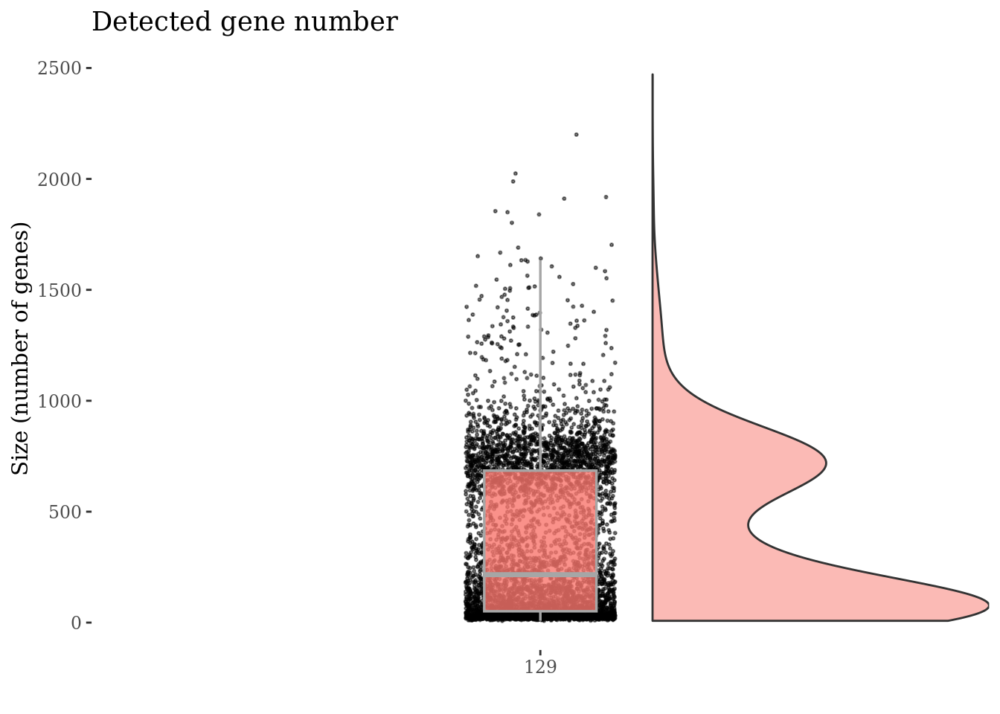
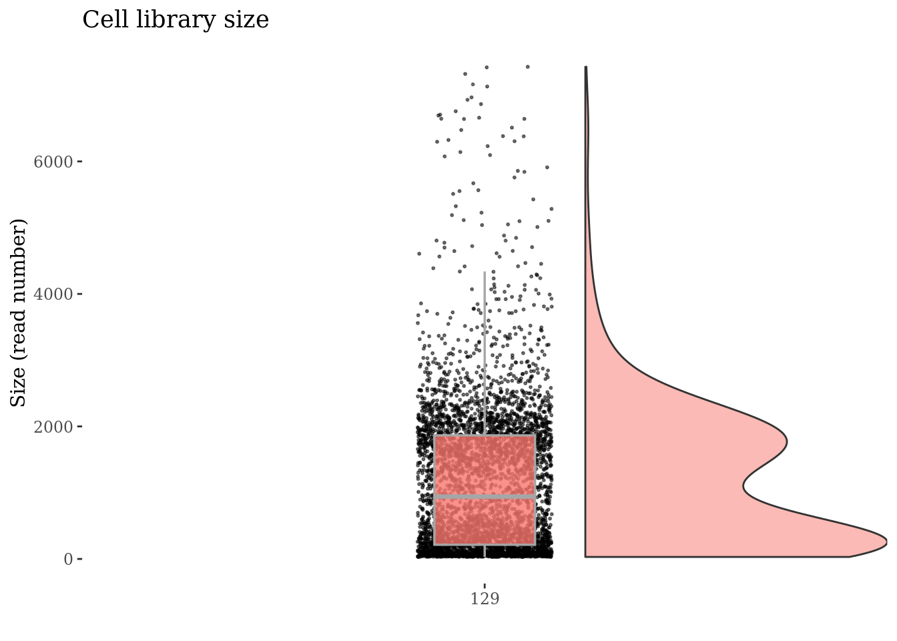
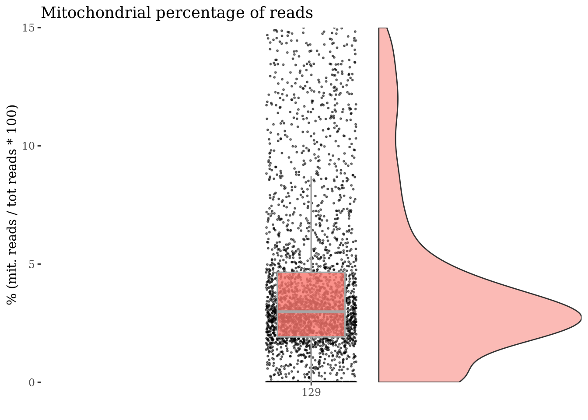
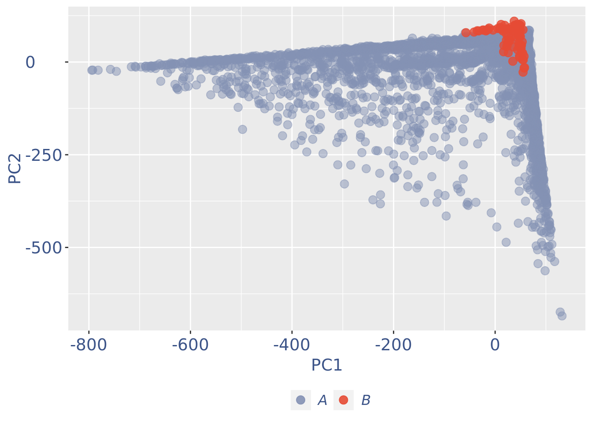
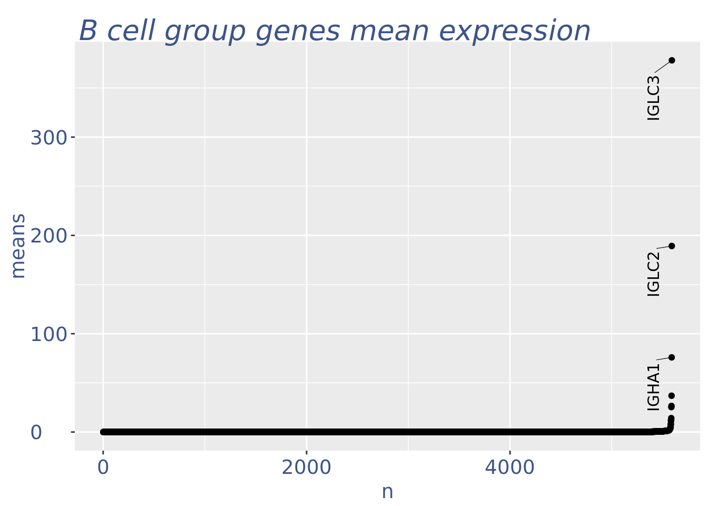
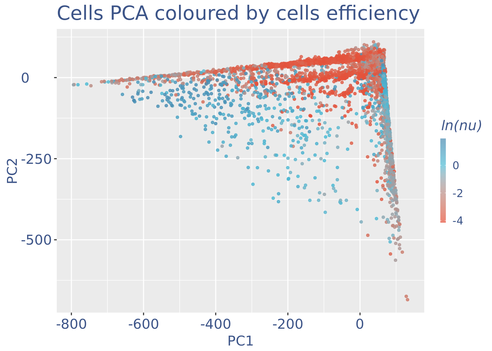
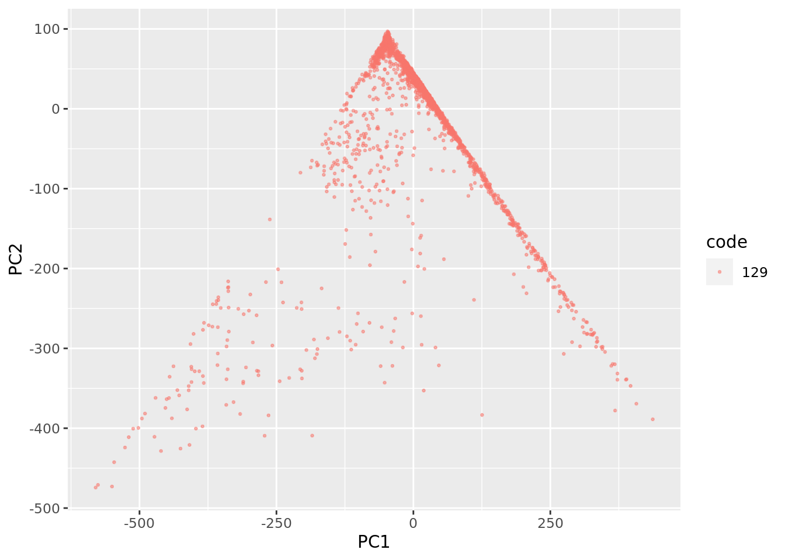
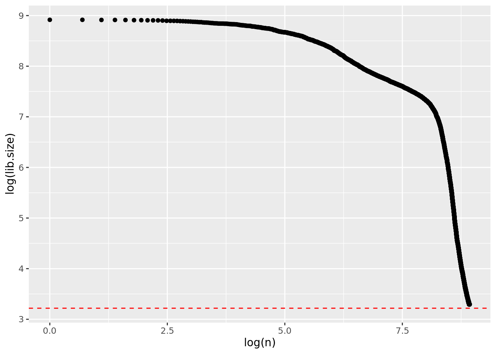

today <- Sys.Date()
format(today, format = "%A %d %B %Y")[1] "Monday 24 October 2022"Last compiled
today <- Sys.Date()
format(today, format = "%A %d %B %Y")[1] "Monday 24 October 2022"#library(COTAN)
library(data.table)
library(Matrix)
library(ggrepel)Loading required package: ggplot2library(stringr)
#library(factoextra)
#library(Rtsne)
library(utils)
#library(plotly)
#library(tidyverse)
#library(htmlwidgets)
#library(MASS)
#library(Seurat)
#library(dendextend)
devtools::load_all("../../../COTAN/")ℹ Loading COTANpatient <- "patient7_ileum"
metadata <- readxl::read_excel("../data/tables-mmc2.xlsx",sheet = 1)
metadata <- as.data.frame(metadata[metadata$Patient.ID == "pat. 7"
& metadata$status %in% c("Uninvolved","Involved")
,])
metadata <- metadata[!is.na(metadata$Sample_ID),]raw.total <- NA
for (sample in metadata$Sample_ID) {
raw <- Seurat::Read10X(paste0("../data/01_raw_data/",sample,"/"),gene.column = 2)
colnames(raw) <- paste0(sample,"_",colnames(raw))
raw <- raw[,!(Matrix::colSums(raw) <= 1)]
print(paste0(sample," dimension ",dim(raw)[1]," ",dim(raw)[2]))
if(is.null(dim(raw.total))){
raw.total <- raw
}else{
if ( identical(rownames(raw),rownames(raw.total) )) {
raw.total <- cbind(raw.total,raw)
}else{
print("Problem!")
break
}
}
}[1] "128 dimension 33694 88054"
[1] "129 dimension 33694 81564"rm(raw)
gc() used (Mb) gc trigger (Mb) max used (Mb)
Ncells 5269782 281.5 9266921 495.0 7675927 410.0
Vcells 27878497 212.7 53288288 406.6 53288288 406.6dim(raw.total)[1] 33694 169618Define output directory:
root <- "../../Crohn_disease/"
out_dir <- paste0(root,"data/02_cleaned_data/")
out_dir[1] "../../Crohn_disease/data/02_cleaned_data/"We check also the genes
sum(Matrix::rowSums(raw.total) <= 1)[1] 13486And drop the empty rows.
raw.total <- raw.total[!(rowSums(raw.total) <= 1),]
dim(raw.total)[1] 20208 169618obj <- methods::new("scCOTAN",raw = raw.total)
#obj <- initRaw(obj,GEO="GSM3972009" ,sc.method="10X",
# cond = "patient.5")dim(obj@raw)[1] 20208 169618We want to remove cell doublets or multiplets and low-quality or dying cells (with too high mtRNA percentage).
First we check the library size (UMI number) with an empirical cumulative distribution function.
ECD.plot(obj,y_cut = 20)
So to start we drop all cell with library size lower then 6.
The next plot shows the library size of each cell in a violin and box plot.
sizes <- Matrix::colSums(obj@raw)
obj <- drop.genes.cells(object = obj,cells = names(sizes[ sizes < 20]))
library.size.plot(obj,split.pattern = "_",n.col = 1)Scale for 'y' is already present. Adding another scale for 'y', which will
replace the existing scale.Warning: Removed 1 rows containing missing values (geom_point).
We can subset and drop the unwanted cell by library size.
sizes <- Matrix::colSums(obj@raw)
obj <- drop.genes.cells(object = obj,cells = names(sizes[ sizes > 7500]))
library.size.plot(obj,split.pattern = "_",n.col = 1)Scale for 'y' is already present. Adding another scale for 'y', which will
replace the existing scale.
dim(obj@raw)[1] 20208 13842We will next have a look the percentage of reads coming from mitochondrial genes. This can help to drop dying cells: these cells will have a percentage of mitochondrial reads particularly high.
df <- mitochondrial.percentage.plot(obj,split.pattern = "_",n.col = 1,gene.prefix = "^MT-")
df$plot
obj <- drop.genes.cells(object = obj,cells = rownames(df$sizes[df$sizes$mit.percentage > 15,]))
df <- mitochondrial.percentage.plot(obj,split.pattern = "_",n.col = 1,gene.prefix = "^MT-")
df$plot
We check again the library size plot
library.size.plot(obj,split.pattern = "_",n.col = 1)Scale for 'y' is already present. Adding another scale for 'y', which will
replace the existing scale.Warning: Removed 1 rows containing missing values (geom_point).
scatter.plot(obj = obj,split.pattern = "[_]",n.col = 1)
Min gene number
sort(colSums(obj@raw > 0),decreasing = F)[1:10]128_CATGGCGTCAGCGATT-1 128_CGAGCCAGTACTTGAC-1 128_GATCGATCATCACAAC-1
4 5 5
128_GCGCCAATCACATGCA-1 128_GCTGCGATCAACGGGA-1 128_GGCGTGTTCTACCTGC-1
5 5 5
128_TACGGGCCAGCAGTTT-1 128_TCTTCGGTCAACGGCC-1 128_CGATTGAGTAGCTAAA-1
5 5 6
128_CTTACCGGTTCACCTC-1
6 We decided to drop all cells having less then 10 genes detected
to.drop <- names(sort(colSums(obj@raw > 0),decreasing = F)[sort(colSums(obj@raw > 0),decreasing = F) < 15])
obj <- drop.genes.cells(object = obj,cells = to.drop)
scatter.plot(obj = obj,split.pattern = "[_]",n.col = 1)
library.size.plot(obj,split.pattern = "_",n.col = 1)Scale for 'y' is already present. Adding another scale for 'y', which will
replace the existing scale.Warning: Removed 1 rows containing missing values (geom_point).
obj <- initRaw(obj,GEO="GSM3972009",sc.method="10X",
cond = "patient.7 ileum")[1] "Initializing S4 object"print(paste("Condition ", patient ,sep = ""))[1] "Condition patient7_ileum"#--------------------------------------
n_cells = length(get.cell.size(object = obj))
print(paste("n cells", n_cells, sep = " "))[1] "n cells 9411"n_it = 1First, we create a directory to store all information regarding the data cleaning.
if(!file.exists(out_dir)){
dir.create(file.path(out_dir))
}
if(!file.exists(paste(out_dir,"cleaning", sep = ""))){
dir.create(file.path(out_dir, "cleaning"))
}gc() used (Mb) gc trigger (Mb) max used (Mb)
Ncells 5421930 289.6 9266921 495.0 8717455 465.6
Vcells 39097284 298.3 137297559 1047.5 142586433 1087.9ttm = clean(obj)[1] "Starting"
[1] "Cells/genes selection done"
[1] "Start estimation mu with linear method"
[1] 10679 9411
[1] "Start PCA"
[1] "Fun linear DONE"
[1] "starting hclust"obj = ttm$object
ttm$pca.cell.2
ttm$pca_cells$code <- str_split(rownames(ttm$pca_cells),pattern = "_",simplify = T)[,1]
ggplot(ttm$pca_cells, aes(x=PC1, y=PC2,colour =code)) +
geom_point(alpha = 0.5, size=2)
ggplot(ttm$pca_cells, aes(x=PC1, y=PC3,colour =code)) +
geom_point(alpha = 0.5, size=2)
ttm$genes.plotWarning: ggrepel: 12 unlabeled data points (too many overlaps). Consider
increasing max.overlaps
To color the PCA based on cells’ RNA extraction efficiency
ttm$UDE.plot
UDE (color) should not correlate with principal components! This is very important. The next part is used to remove the cells with efficiency too low.
nu_df = data.frame("nu"= sort(get.nu(obj)), "n"=c(1:length(get.nu(obj))))
ggplot(nu_df, aes(x = n, y=nu)) +
geom_point(colour = "#8491B4B2", size=1)
#my_theme #+ ylim(0,1) + xlim(0,70)We can zoom on the smallest values and, if we detect a clear elbow, we can decide to remove the cells.
yset = 0.025#threshold to remove low UDE cells
plot.ude <- ggplot(nu_df, aes(x = n, y=nu)) +
geom_point(colour = "#8491B4B2", size=1) +
ylim(0,0.2) + xlim(0,5000) +
geom_hline(yintercept=yset, linetype="dashed", color = "darkred") +
annotate(geom="text", x=200, y=0.05,
label=paste("to remove cells with nu < ",yset,sep = " "),
color="darkred", size=4.5)
plot.udeWarning: Removed 5243 rows containing missing values (geom_point).
For this round of analysis, we want to keep the low UMI cells to keep a cell population with very low amounts of RNA as neutrophil cells. So we drop only cell with a nu lower then 0.024 here.
obj = add.row.to.meta(obj,c("Threshold low UDE cells:",yset))
to_rem = rownames(nu_df[which(nu_df$nu < yset),])
obj = drop.genes.cells(object = obj, genes = c(),cells = to_rem)print(paste("Condition ", patient ,sep = ""))[1] "Condition patient7_ileum"#--------------------------------------
n_cells = length(get.cell.size(object = obj))
print(paste("n cells", n_cells, sep = " "))[1] "n cells 7564"n_it = 1ttm = clean(obj)[1] "Starting"
[1] "Cells/genes selection done"
[1] "Start estimation mu with linear method"
[1] 10679 7564
[1] "Start PCA"
[1] "Fun linear DONE"
[1] "starting hclust"obj = ttm$object
ttm$pca.cell.2
ttm$genes.plotWarning: ggrepel: 13 unlabeled data points (too many overlaps). Consider
increasing max.overlapsttm$UDE.plot
ECD.plot(obj,y_cut = 25)
scatter.plot(obj = obj,split.pattern = "[_]",n.col = 1)
#saveRDS(obj,paste0(out_dir,patient,"_obj_cotan.RDS"))sessionInfo()R version 4.2.1 (2022-06-23)
Platform: x86_64-pc-linux-gnu (64-bit)
Running under: Ubuntu 20.04.5 LTS
Matrix products: default
BLAS: /usr/lib/x86_64-linux-gnu/blas/libblas.so.3.9.0
LAPACK: /usr/lib/x86_64-linux-gnu/lapack/liblapack.so.3.9.0
locale:
[1] LC_CTYPE=C.UTF-8 LC_NUMERIC=C LC_TIME=C.UTF-8
[4] LC_COLLATE=C.UTF-8 LC_MONETARY=C.UTF-8 LC_MESSAGES=C.UTF-8
[7] LC_PAPER=C.UTF-8 LC_NAME=C LC_ADDRESS=C
[10] LC_TELEPHONE=C LC_MEASUREMENT=C.UTF-8 LC_IDENTIFICATION=C
attached base packages:
[1] stats graphics grDevices utils datasets methods base
other attached packages:
[1] COTAN_0.99.12 testthat_3.1.4 stringr_1.4.0 ggrepel_0.9.1
[5] ggplot2_3.3.6 Matrix_1.5-1 data.table_1.14.2
loaded via a namespace (and not attached):
[1] readxl_1.4.0 circlize_0.4.15 plyr_1.8.7
[4] igraph_1.3.4 lazyeval_0.2.2 sp_1.5-0
[7] splines_4.2.1 listenv_0.8.0 scattermore_0.8
[10] usethis_2.1.6 digest_0.6.29 foreach_1.5.2
[13] htmltools_0.5.2 viridis_0.6.2 fansi_1.0.3
[16] magrittr_2.0.3 memoise_2.0.1 tensor_1.5
[19] cluster_2.1.4 doParallel_1.0.17 ROCR_1.0-11
[22] remotes_2.4.2 ComplexHeatmap_2.13.0 globals_0.16.0
[25] matrixStats_0.62.0 spatstat.sparse_2.1-1 prettyunits_1.1.1
[28] colorspace_2.0-3 xfun_0.31 dplyr_1.0.9
[31] callr_3.7.0 crayon_1.5.1 jsonlite_1.8.0
[34] progressr_0.11.0 spatstat.data_2.2-0 survival_3.4-0
[37] zoo_1.8-10 iterators_1.0.14 glue_1.6.2
[40] polyclip_1.10-0 gtable_0.3.0 leiden_0.4.2
[43] GetoptLong_1.0.5 pkgbuild_1.3.1 RcppZiggurat_0.1.6
[46] future.apply_1.9.0 shape_1.4.6 BiocGenerics_0.43.0
[49] abind_1.4-5 scales_1.2.0 DBI_1.1.3
[52] ggthemes_4.2.4 spatstat.random_2.2-0 miniUI_0.1.1.1
[55] Rcpp_1.0.9 viridisLite_0.4.0 xtable_1.8-4
[58] clue_0.3-61 reticulate_1.25 spatstat.core_2.4-4
[61] stats4_4.2.1 htmlwidgets_1.5.4 httr_1.4.4
[64] RColorBrewer_1.1-3 ellipsis_0.3.2 Seurat_4.2.0
[67] factoextra_1.0.7 ica_1.0-2 farver_2.1.0
[70] pkgconfig_2.0.3 uwot_0.1.14 deldir_1.0-6
[73] utf8_1.2.2 labeling_0.4.2 tidyselect_1.2.0
[76] rlang_1.0.6 reshape2_1.4.4 later_1.3.0
[79] cellranger_1.1.0 munsell_0.5.0 tools_4.2.1
[82] cachem_1.0.6 cli_3.4.1 generics_0.1.2
[85] devtools_2.4.3 ggridges_0.5.3 evaluate_0.17
[88] fastmap_1.1.0 goftest_1.2-3 yaml_2.3.5
[91] processx_3.7.0 knitr_1.40 fs_1.5.2
[94] fitdistrplus_1.1-8 purrr_0.3.4 RANN_2.6.1
[97] dendextend_1.16.0 nlme_3.1-160 pbapply_1.5-0
[100] future_1.28.0 mime_0.12 brio_1.1.3
[103] compiler_4.2.1 rstudioapi_0.13 plotly_4.10.0
[106] png_0.1-7 spatstat.utils_2.3-1 tibble_3.1.7
[109] stringi_1.7.6 ps_1.7.0 desc_1.4.1
[112] rgeos_0.5-9 lattice_0.20-45 vctrs_0.4.1
[115] pillar_1.8.1 lifecycle_1.0.3 spatstat.geom_2.4-0
[118] lmtest_0.9-40 GlobalOptions_0.1.2 RcppAnnoy_0.0.19
[121] cowplot_1.1.1 irlba_2.3.5.1 httpuv_1.6.5
[124] patchwork_1.1.1 R6_2.5.1 promises_1.2.0.1
[127] KernSmooth_2.23-20 gridExtra_2.3 IRanges_2.31.2
[130] parallelly_1.32.1 sessioninfo_1.2.2 codetools_0.2-18
[133] MASS_7.3-58 assertthat_0.2.1 pkgload_1.3.0
[136] rprojroot_2.0.3 rjson_0.2.21 withr_2.5.0
[139] SeuratObject_4.1.2 sctransform_0.3.5 S4Vectors_0.35.0
[142] mgcv_1.8-40 parallel_4.2.1 rpart_4.1.16
[145] grid_4.2.1 tidyr_1.2.0 rmarkdown_2.17
[148] Rfast_2.0.6 Rtsne_0.16 shiny_1.7.1